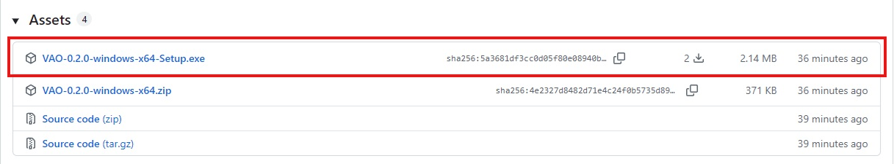
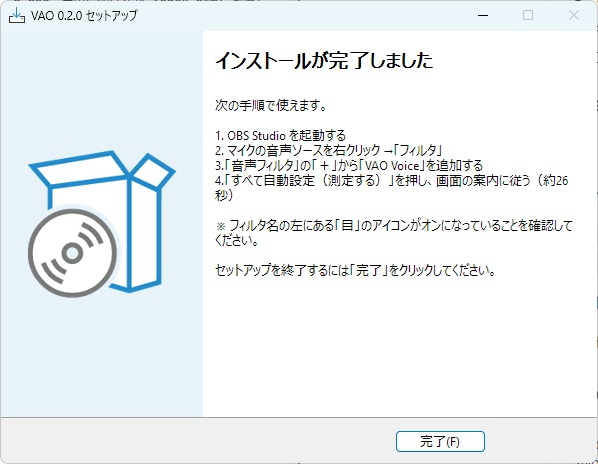
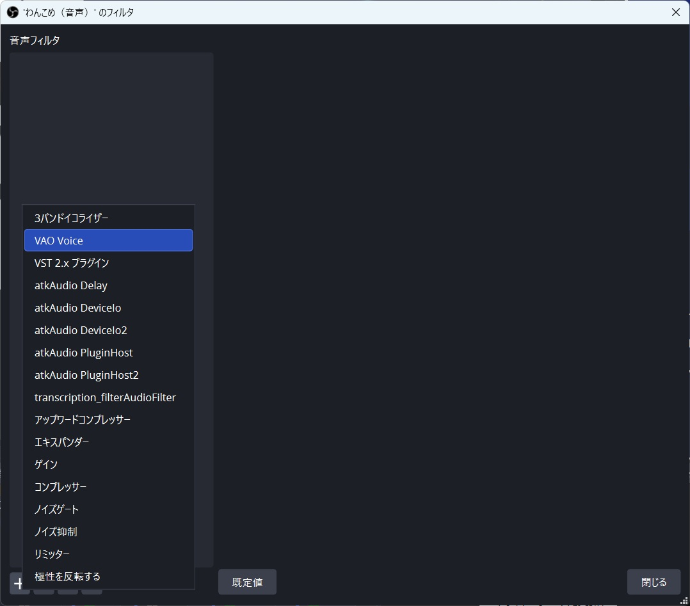
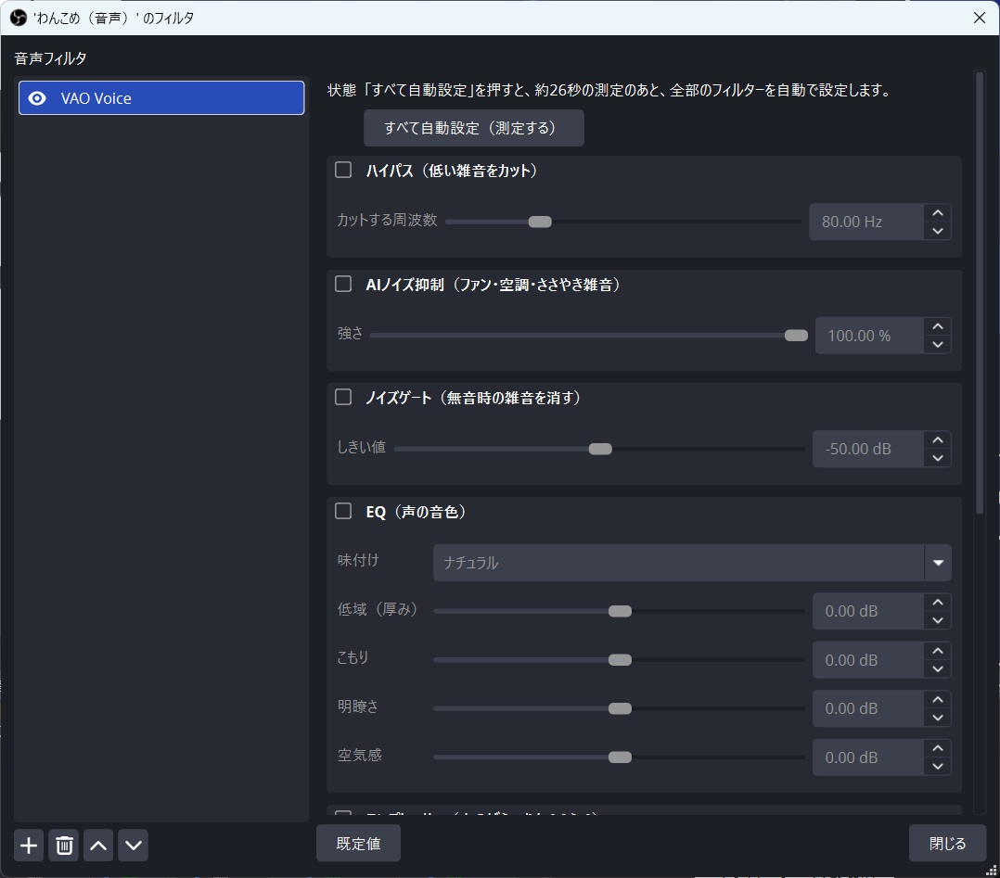
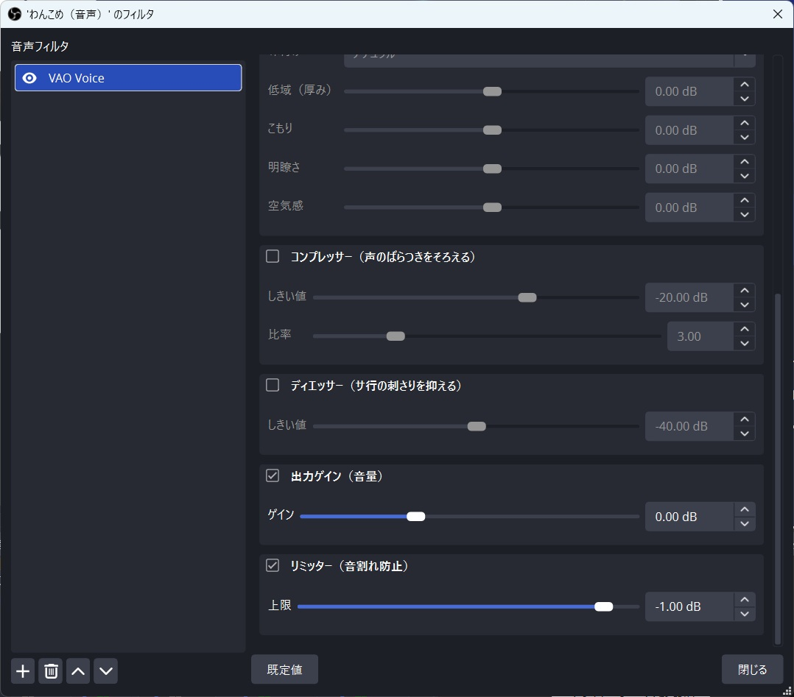
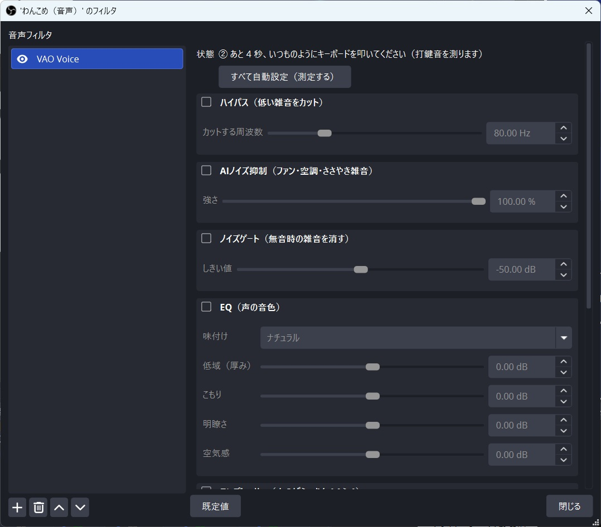

VAO
Voice Auto Optimizer
文章を読むだけで、マイクの音量・雑音・声の聞きやすさを自動で整える
OBS Studio 用の無料フィルタ
Windows 10 / 11 ・ OBS Studio が入っていること ・ 無料 ・ 管理者権限は不要
こんな悩みを解決します
- 配信の音が小さくて、聞き取ってもらえない
- エアコンやファンの雑音が気になる
- キーボードやマウスのカチカチ音が入ってしまう
- 声がこもる、サ行が耳に痛い
- マイクの設定が、むずかしくてよく分からない
VAO は、画面に出る文章を読むだけで、あなたの声と部屋に合わせて、これらを自動で設定します。
インストール（3 ステップ）
-
OBS Studio を終了して、インストーラーをダウンロードします。
上の「ダウンロードページを開く」を押し、ページの下のほうにあるVAO-…-windows-x64-Setup.exeをクリックします。
「Assets」の中の Setup.exeを押します（zip ではありません）。 -
ダウンロードしたファイルをダブルクリックします。
青い画面で「WindowsによってPCが保護されました」と出ることがあります。 ソフトに電子署名が付いていないための表示で、VAO に問題があるわけではありません。 「詳細情報」を押し、出てくる「実行」を押してください。
-
画面の案内に従って、「インストール」→「完了」の順に押します。
入れる場所を選ぶ画面はありません（言語の選択が出たら、「日本語」のまま「OK」）。 OBS が起動していると、「OBS を終了してください」と表示されます。
最後の「完了」の画面に、使い始める手順が出ます。
使い方（4 ステップ）
-
OBS を起動して、マイクの「フィルタ」を開きます。
「音声ミキサー」のマイクの歯車、または音声ソースの右クリックから「フィルタ」を選びます。 -
「音声フィルタ」の「＋」から「VAO Voice」を追加します。

名前の左の「目」のアイコンがオンになっているか、確認してください。 -
「すべて自動設定（測定する）」を押します。

いちばん上のボタンです。その下に、各処理のオン・オフと調整が、処理の順番どおりに並んでいます。 
下へスクロールすると、コンプレッサー・ディエッサー・出力ゲイン・リミッターがあります。 -
画面の案内に従います（合計約 26 秒）。
- ① 黙っている（部屋の雑音を測ります）
- ② いつものようにキーボードを叩く
- ③ マウスをカチカチ押す
- ④ 表示される文章を、普段の声で読む
- ⑤ 一番大きい声で「あー」と言う

「状態」の欄に、いまやることと残りの秒数が出ます。
マイクや部屋を変えたときは、もう一度「すべて自動設定」を押してください。測定中は、ゲームの音や BGM を止めておくと、正しく測れます。
うまくいかないとき
フィルタの一覧に「VAO Voice」が出ない
OBS を完全に終了してから、もう一度起動してください。それでも出ないときは、インストーラーをもう一度実行してください。
「あと 3 秒」のまま、測定が進まない
フィルタ名の左の「目」のアイコンがオンか、マイクがミュートや無効になっていないかを確認してください。画面の「状態」欄にも、理由が表示されます。
「入力が音割れしています」と出る
マイク側の音量が大きすぎます。Windows のサウンド設定（マイクのプロパティ）や、オーディオインターフェースの音量を下げてから、もう一度「すべて自動設定」を押してください。
AI ノイズ抑制が効かない
OBS の「設定」→「音声」→「サンプルレート」が 48 kHz か、確認してください。OBS 標準の「ノイズ抑制」を同時に付けていると、二重にかかるので、どちらか一方にしてください。
声の出だしや語尾が切れる
「ノイズゲート」のしきい値を、少し下げてください（左へ動かす）。
そのほかの対処は、くわしい説明書（Readme.txt）にあります。
くわしく知りたい方へ
- 説明書（Readme.txt） ― 作った理由・設計の考え方、すべての設定項目
- ソースコード（GitHub） ― GPL-2.0 以降のオープンソースです
- 不具合・要望の報告（GitHub のアカウントが必要です）